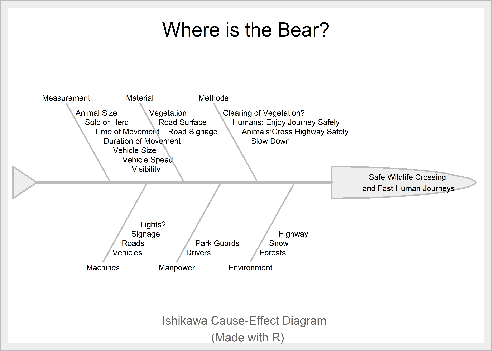

The TRIZ Chronicles: TRIZ Analysis of the Banff Wildlife Crossings
Why did the Bear cross the Trans-Canada Highway?
TRIZ Chronicles
Inventive Principles
Contradictions
Banff
Abstract
Is there a solution to wildlife roadkill?
Here we go with another of my TRIZ Chronicles ! The earlier editions are here: Lawrence of Arabia, Spotify, Great Bubble Barrier, and the OWind Turbine.
This is another piece stems from my teaching a course on Creative Thinking and Problem Solving based on TRIZ, titled Play and Invent, over the past 8 years or more at the Srishti Manipal Institute of Art, Design, and Technology and now at DSU School of Commerce & Management Studies, both in Bangalore, INDIA.
Wildlife roadkill was a serious problem in Banff National Park in Canada, for both wildlife and motorists. The problem was tackled beautifully by Parks Canada using a system of tunnels and stunning natural-looking overpasses.
Without further ado, let us do a TRIZ Analysis of this remarkable set of inventions.
For a TRIZ workflow, we proceed as before:
- First, using the method described in Open Source TRIZ, we identify knobs or parameters within the situation
- We see how turning these could lead to identifying a Statement / Cause for a Problem in the form of a Contradiction.
- Re-word the plain English Contradiction into TRIZ Parameters and look it up in the Contradiction Matrix. Obtain the Inventive Principles.
- Apply these Inventive Principles into your Problem and solve it.
Here below is a quick Ishikawa Diagram to help us identify the Parameters of this Problem:
Looking at this Diagram, with the aspects identified, we could pair them off and see how they affect one another. In doing so, we could make up several problem statements. Let us state some of our Problems
- Signage would help drivers slow down, but slowing down may make journey less enjoyable.
- Slowing Down may improve animal movement but may endanger humans.
- Clearing the Vegetation may make animals more visible, but may also make vehicles visible to animals and affect their movement
As you can see, many different problems and contradictions await our attention. Let us cut to the chase and state our Administrative Contradiction(AC) in plain English:
AC: We wish to drive at high speeds, but not kill migrating wild animals nor endanger our vehicles.
What would an IFR be in this situation? How “unreasonable” can we be? Let us try:
The Animals and Humans should both use the Road whenever they want without being mutually affected!
Let us take our AC and convert it into a Technical Contradiction(TC), keeping this IFR in mind. We will look at the 48 TRIZ Parameters in the TRIZ Contradiction Matrix and see which Parameter we want to improve, while not worsening another. Here is what we can obtain. We will analyze the Contradictions both ways1:
-
TC1: Improve
Loss of Time(26)and not worsenDuration of Action by Moving Object(12)
Since our IFR is all about time, we have chosen the TRIZ Parameters that are time-oriented. We could have also tried the following:
-
TC2: Improve
Volume of Moving Object(7)and not worsenLoss of Time(26) -
TC3: Improve
Other harmful factors Acting on the System(40)and not worsenDuration of Action by Stationary Object(13)2
- These include Volume and External Factors which are not quite there in out IFR. Is there a Physical Contradiction(PC)3 possible here?
In fact our IFR is nearly worded as a PC: The Vehicles and the Animals must use the Road at the Same Time.
Let us take the set of TC-s into the Contradiction Matrix and arrive at the list of TRIZ Inventive Principles. Here is what the Matrix suggests:
For TC1:
- 3(Local Quality)
- 17(Another Dimension)
- 28(Mechanics Substitution)
- 8(Anti-Weight); and
- 19(Periodic Action),
- 10(Preliminary Action)
Hmm…based on the PC, we may have expected a Separation in Space solution, suggested by Another Dimension and Local Quality. Viewing these Inventive Principles as we Generalized Solutions, we try to map these back into the Problem at hand. In keeping with the metaphoric/analogic way of thinking that TRIZ embodies, I deliberately use many visual hints here from math, physics, geography, and biology.
3(Local Quality): So something that is local…local where? Well, along the highway, of course. So something that is located a specific points along the highway. Nice but not really clear enough to be actionable, yet.
17(Another Dimension): Well, well. The Road is a linear thing and has length and breadth. What would we use for another dimension? Height, of course! So, we need to go either above the road or below! And that leads us to a …bridge and a tunnel !!!
The other Inventive Principles are, to me, not evocative enough in this instance. But we already have a decent idea: we could just imagine a set of Local bridges and tunnels that occur at Periodic Intervals along the highway. And that is exactly what Parks Canada have done.

Here is the solution in action:
As Hipple explains, there is frequently an underlying physical parameter, such as length, breadth, weight, or energy, or speed for example that lies at the root of our Technical Contradiction. Our IFR states that we want the humans and animals to use the road at the same TIME, and hence Separation in Space becomes a nice way to think of a solution.
That’s a wrap! In the next episode of the #TRIZ Chronicles, I wish to step even further out of my area of expertise and dabble in HR! I think looking at some of the institution-building ideas in Ricardo Semler’s book, Maverick would be a good idea!
- https://discoverapega.ca/stories/wildlife-crossings-key-to-highway-safety-in-banff/
- Jack Hipple, The Ideal Result and How to Achieve It. Springer; 2012th edition (June 26, 2012)
- Valery Souchkov, Defining Contradictions. http://www.xtriz.com/Training/TRIZ_DefineContradiction_Tutorial.pdf
- Open Source TRIZ: Making Contradictions. https://www.youtube.com/watch?v=cah0OhCH55k
- Scrucca (2004)
- Cano, Moguerza, and Redchuk (2012)
References
Cano, Emilio L., Javier M. Moguerza, and Andrés Redchuk. 2012. “Six Sigma with r. Statistical Engineering for Process Improvement” 36: 323. https://doi.org/10.1007/978-1-4614-3652-2.
Scrucca, Luca. 2004. “Qcc: An r Package for Quality Control Charting and Statistical Process Control” 4/1. https://cran.r-project.org/doc/Rnews/.
Footnotes
The Contradiction Matrix is not quite symmetric, so stating the Contradiction both ways allows us to access a slightly larger set of Inventive Principles from two cells of the Matrix.↩︎
Animals are nearly stationary compared to the vehicles.↩︎
Arriving at Physical Contradictions is not always easy! If we can, then there are a very crisp set of TRIZ Separation Principles that we can apply to solve the Problem.↩︎